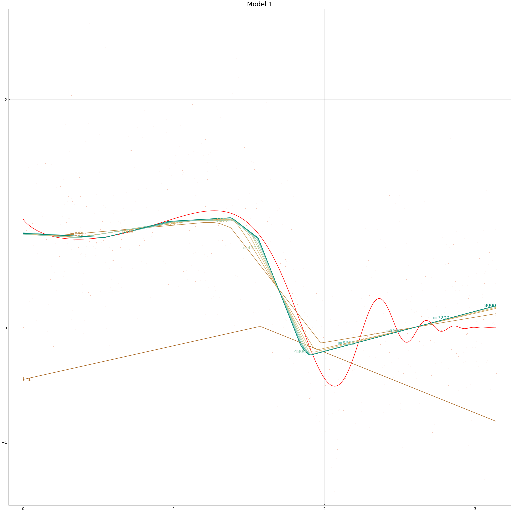
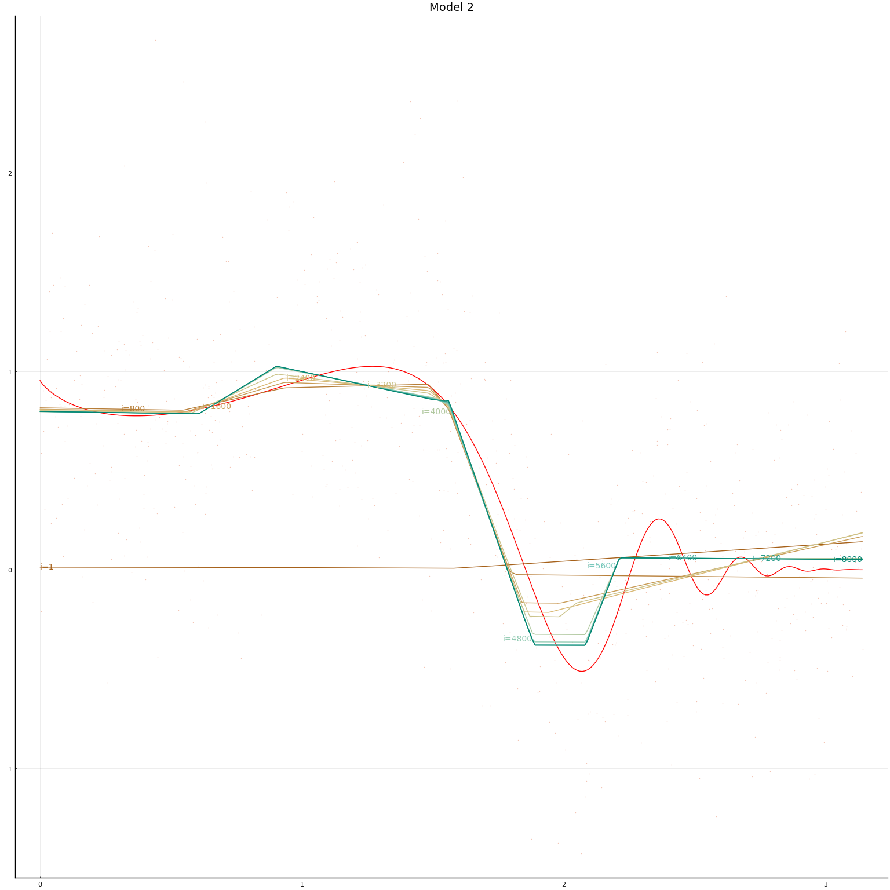
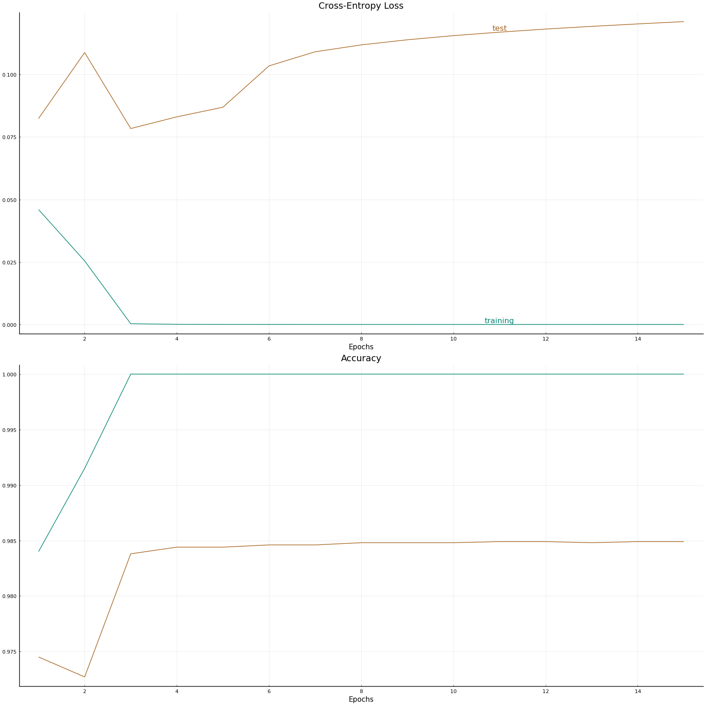

This work is licensed under a Creative Commons Attribution-ShareAlike 4.0 International License
About this document¶
This document was created using Weave.jl. The code is available in on github. The same document generates both static webpages and associated jupyter notebook.
Introduction¶
The previous notes discussed single layer neural networks. These notes will look at multiple layer networks.
Additional Reading¶
- Goodfellow, Bengio, and Courville (2016) Deep Learning
Knet.jldocumentation especially the textbook- Klok and Nazarathy (2019) Statistics with Julia:Fundamentals for Data Science, MachineLearning and Artificial Intelligence
- Farrell, Liang, and Misra (2018) “Deep Neural Networks for Estimation and Inference”
Multiple Layer Neural Networks¶
A multiple layer feed forward neural network (aka a multi-layer perception) connects many single layer networks. A multi-layer perceptron can be written recursively. The outermost layer of a multi-layer perception looks like a generalized linear model: where $x_L, w_L \in \R^{H_L}$, $b_L \in \R$, and $\psi_L: \R \to \R$. For regression problems, $\psi_L$ is typically the identity function.
In a generalized linear model, $x_L$ would be data. In a multilayer network, $x_L \in \R^{H_{L}}$ is the output of a previous layer. Specificaly, for $k \in { 1, ...., H_L}$, where $x_{L-1}, w_{L-1} \in \R^{H_{L-1}}$, $b_{L-1} \in \R$, and $\psi_{k,L-1}: \R \to \R$. This continues recursively until $x_0 = x \in \R^d$ is the data.
$L$ is the depth of the network.
When $L$ is sufficiently large, you have a deep neural network, and can attract grant money by calling your research deep learning and/or AI.
$H_\ell$ is the width of layer $\ell$. Following Farrell, Liang, and Misra (2018), we will let denote the number of units. The number of parameters is where $H_0 = d$ is the dimension of the data.
In most applications, the activation within a layer is the same for each unit, i.e. $\psi_{k,\ell}$ does not vary with $k$. In large networks and/or with large datasets, activation functions are usually (leaky) rectified linear to allow faster computation.
The combination of depths ($L$), width ($H_\ell$), and activation functions ($\psi$) are collectively referred to as the network architecture.
First Example¶
As a starting example, here is some code that fits a multi-layer network to the same simulated data as in the notes on single layer networks.
Simulating data and setting up.
using Plots, Flux, Statistics, ColorSchemes
# some function to estimate
f(x) = sin(x^x)/2^((x^x-π/2)/π)
function simulate(n,s=1)
x = rand(n,1).*π
y = f.(x) .+ randn(n).*s
(x,y)
end
x, y = simulate(1000, 0.5)
xt = reshape(x, 1, length(x))
yt = reshape(y, 1, length(y))
xg = 0:0.01:π
cscheme = colorschemes[:BrBG_4];
dimx = 1
xt = reshape(Float32.(x), 1, length(x))
yt = reshape(Float32.(y), 1, length(y))
1×1000 Array{Float32,2}:
-0.797703 0.548108 0.240685 1.16682 … 1.05815 0.466921 0.783778
We now define our models. The second model is a multi-layer network with 3 layers each of width 3. The first model is a single-layer network with width 15. This makes the total number of parameters in the two networks equal. For both networks we normalise $x$ and then use Flux’s default initial values (these set $b=0$ and $w$ random).
models = [ Chain(x->Flux.normalise(x, dims=2),
Dense(dimx, 15, Flux.leakyrelu),
Dense(15, 1)),
Chain(x->Flux.normalise(x, dims=2),
Dense(dimx, 3, Flux.leakyrelu),
Dense(3, 3, Flux.leakyrelu),
Dense(3, 3, Flux.leakyrelu),
Dense(3, 1))
]
figs = Array{typeof(plot(0)),1}(undef,length(models))
initmfigs = Array{typeof(plot(0)),1}(undef,length(models))
for r in eachindex(models)
m = models[r]
println("Model $r = $m")
nparm = sum([length(m[i].W) + length(m[i].b) for i in 2:length(m)])
println(" $nparm parameters in $(length(m)-1) layers")
initmfigs[r] = plot(xg, Tracker.data(m[1:(end-1)](xg'))', lab="", legend=false)
figs[r]=plot(xg, f.(xg), lab="", title="Model $r", color=:red)
figs[r]=scatter!(x,y, alpha=0.4, markersize=1, markerstrokewidth=0, lab="")
maxiter = 5000
@time for i = 1:maxiter
Flux.train!((x,y)->Flux.mse(m(x),y), Flux.params(m),
#[(xt[:,b], yt[:,b]) for b in Base.Iterators.partition(1:length(yt), 500)],
[(xt, yt)],
Flux.AMSGrad() ) #,
#cb = Flux.throttle(()->@show(Flux.mse(m(xt),yt)),100))
if i==1 || (i % (maxiter ÷ 10)==0)
l=Tracker.data(Flux.mse(m(xt), yt))
println("Model $r, $i iterations, loss=$l")
yg = Tracker.data(m(xg'))'
loc=Int64.(ceil(length(xg)*i/maxiter))
figs[r]=plot!(xg,yg, lab="", color=get(cscheme, i/maxiter), alpha=1.0,
annotations=(xg[loc], yg[loc],
Plots.text("i=$i", i<maxiter/2 ? :left : :right, pointsize=10,
color=get(cscheme, i/maxiter)) )
)
end
end
display(figs[r])
end
Model 1 = Chain(#3, Dense(1, 15, leakyrelu), Dense(15, 1))
46 parameters in 2 layers
Model 1, 1 iterations, loss=0.82055414
Model 1, 500 iterations, loss=0.26346454
Model 1, 1000 iterations, loss=0.2625347
Model 1, 1500 iterations, loss=0.2623096
Model 1, 2000 iterations, loss=0.26217508
Model 1, 2500 iterations, loss=0.26206267
Model 1, 3000 iterations, loss=0.26199454
Model 1, 3500 iterations, loss=0.2619396
Model 1, 4000 iterations, loss=0.26190692
Model 1, 4500 iterations, loss=0.26188213
Model 1, 5000 iterations, loss=0.2618579
10.970610 seconds (24.46 M allocations: 2.843 GiB, 10.49% gc time)
Model 2 = Chain(#4, Dense(1, 3, leakyrelu), Dense(3, 3, leakyrelu), Dense(3
, 3, leakyrelu), Dense(3, 1))
34 parameters in 4 layers
Model 2, 1 iterations, loss=0.5179933
Model 2, 500 iterations, loss=0.26679733
Model 2, 1000 iterations, loss=0.2666847
Model 2, 1500 iterations, loss=0.2666628
Model 2, 2000 iterations, loss=0.2666493
Model 2, 2500 iterations, loss=0.26664367
Model 2, 3000 iterations, loss=0.26663992
Model 2, 3500 iterations, loss=0.26663697
Model 2, 4000 iterations, loss=0.26663497
Model 2, 4500 iterations, loss=0.2666332
Model 2, 5000 iterations, loss=0.2666317
3.132750 seconds (4.65 M allocations: 1.253 GiB, 9.18% gc time)
 
In this simulation setup, the performance of the two network architectures is hard to distinguish. The multi-layer network takes a bit longer to train. Depending on the randomly simulated data, and randomly drawn initial values, either model might achieve lower in-sample MSE.
Image Classification: MNIST¶
MNIST is a database of images of handwritten digits. MNIST is a common machine learning benchmark. Given a handwritten digit, we want to classify it is a 0, 1, …, or 9. You can try a demo of a MNIST classifier trained in Flux here.
Multilayer feed forward networks generally have good, but not quite state-of-the-art performance in image classification. Nonetheless, this will hopefully serve as a good example.
The code in this section was adapted from the Flux model zoo.
First we load some packages and download the data.
using Flux, Flux.Data.MNIST, Statistics
using Flux: onehotbatch, onecold, crossentropy, throttle, @epochs
using Base.Iterators: repeated
using CuArrays
using BSON: @save, @load
imgs = MNIST.images()
labels = MNIST.labels()
length(labels)
60000
Let’s look at some of the images.
idx = rand(1:length(imgs), 16)
plot([plot(imgs[i], title="$(labels[i])", aspect_ratio=:equal, axis=false, ticks=false) for i in idx]...)
The images are 28 by 28 pixels. I believe they were originally black ink on white paper, but the colors are being inverted somewhere.
Continue processing the data
# Stack images into one large batch
X = hcat(float.(reshape.(imgs, :))...) |> gpu;
# One-hot-encode the labels
Y = onehotbatch(labels, 0:9) |> gpu;
One hot encoding is what the machine learning world calls creating dummy variables from a categorical variable.
Single Layer Classification¶
Now we define our neural network. To begin with we will look at single hidden layer with a multinomial logit output layer. The function that gives choice probabilities in a multinomial logit model is called the softmax function. That is,
m = Chain(
Dense(28^2, 32, relu),
Dense(32, 10),
softmax) |> gpu
Chain(Dense(784, 32, relu), Dense(32, 10), softmax)
In this example, we are working on a classification problem; we are trying to predict a discrete outcome instead of a continuous one. The output of the network above are probabilities that an image represents each of the ten digits. That is, we forming conditional probability, or the likelihood, of $y$ given $x$. In this situation, maximum likelihood is a natural estimator. For discrete $y$ (like we have here), the log likelihood is equal to minus the cross-entropy, so this is what we use as our loss function.
loss(x, y) = crossentropy(m(x), y)
loss (generic function with 1 method)
Since cross-entropy or log likelihood are difficult to interpret, we might want a more intuitive measure of our model’s performance. For classification accuracy is the portion of predictions that are correct.
Other measures of classification performance
For this application accuracy is likely sufficient, but in some situations (including rare outcomes or when we weight differently type I and type II errors) accuracy is not a sufficient measure of a classifier’s performance. There are variety of other measures, such as precision, recall, and AUC. See Batista et al. (2019) for more information.
accuracy(x, y) = mean(onecold(m(x)) .== onecold(y))
accuracy (generic function with 1 method)
onecold is the inverse of one-hot-encoding; onecold transforms a
matrix of dummy varibles (or probabilities) into an integer (the one
with the highest probability in the case of m(x)).
dataset = repeated((X, Y), 200) # each call to Flux.trian! will do 200
# gradient descent steps using the full X and Y to compute gradients
Xsmall=X[:,1:1000]
Ysmall=Y[:,1:1000] # accuracy is slower, so only compute on subset of data
# Test set
tX = hcat(float.(reshape.(MNIST.images(:test), :))...) |> gpu
tY = onehotbatch(MNIST.labels(:test), 0:9) |> gpu
evalcb = () -> @show(loss(X, Y), accuracy(Xsmall,Ysmall), accuracy(tX,tY))
opt = ADAM()
ADAM(0.001, (0.9, 0.999), IdDict{Any,Any}())
Since Flux.train! might run for a long time, it allows us to pass a
“callback” function that gets evaluated every iteration. Here, this
function is just used to monitor progress. In some situations, we might
also want to use the callback function to save intermediate results to
disk in case the computation gets interrupted before completion. The
Flux.throttle function can be used to prevent the call-back function
from being evaluated too often. The code below makes evalcb get
evaluated at most once every 10 seconds.
rerun = false
modelfile = joinpath(docdir,"jmd","bson","mnist-slp.bson")
if rerun || !isfile(modelfile)
evalcb()
@time Flux.train!(loss, params(m), dataset, opt, cb = throttle(evalcb, 10))
evalcb()
# save model
cpum = cpu(m)
@save modelfile cpum
else
@load modelfile cpum
m = gpu(cpum)
end
Chain(Dense(784, 32, relu), Dense(32, 10), softmax)
@show accuracy(X, Y)
accuracy(X, Y) = 0.9257166666666666
@show accuracy(tX, tY);
accuracy(tX, tY) = 0.9267
After 200 iterations, the accuracy is already greater than 90%. This is pretty good.
The test set accuracy is higher than the training set, which could just be good luck, but it is also possible that the model is underfitting. Let’s try training the network longer (doing more gradient descent iterations.
rerun = false
modelfile = joinpath(docdir,"jmd","bson","mnist-slp-2200.bson")
if rerun || !isfile(modelfile)
evalcb()
@time @epochs 10 Flux.train!(loss, params(m), dataset, opt, cb = throttle(evalcb, 10))
evalcb()
# save model
cpum = cpu(m)
@save modelfile cpum
else
@load modelfile cpum
m = gpu(cpum)
end
@show accuracy(X, Y)
accuracy(X, Y) = 0.9909166666666667
@show accuracy(tX,tY);
accuracy(tX, tY) = 0.9639
Remember that each “epoch” does one gradient descent step for each tuple
in dataset. In the code above dataset is just the original data
repeated 200 times. We ran for 10 epochs, so there were a total of 2000
more gradient descent iterations. We see that the training accuracy has
improved to above 99%, but our test accuracy has failed to improve much
above 96%.
My initial interpretation of this result would be that we are now overfitting. The number of parameters in the network is
nparam(m) = sum([length(m[i].W) + length(m[i].b) for i in 1:length(m) if typeof(m[i]) <: Dense])
nparam(m)
25450
and there 60000 images. For a typical econometric or statistic problem, there are too many parameters for the number of observations. One solution to this situation is to reduce the number of parameters. Another solution is to do what lasso does and regularize. Lasso regularizes by adding a penalty to the loss function. Limiting the number of gradient descent iterations can also act as a form of regularization. This is often called Landweber regularization. It underlies the common procedure of training a neural network until the training loss starts to be much less than loss on a held out portion of the data (or the loss on the held out portion stops decreasing).
Deep Classification¶
Given the apparent overfitting of the single layer network above, I would be reluctant to move to an even more complex model. However, I would be mistaken. If you glance through the MNIST benchmarks on LeCun’s website, you will see that Ciresan et al. (2010) achieve a much higher test accuracy with a 6 layer network. Let’s try their network architecture. We will use their numbers of layers and hidden units, but with rectified linear activation. They used tanh activation functions.
cmgsnet = Chain(
Dense(28^2, 2500 , relu),
Dense(2500, 2000 , relu),
Dense(2000, 1500 , relu),
Dense(1500, 1000 , relu),
Dense(1000, 500 , relu),
Dense(500, 10),
softmax) |> gpu
loss(x, y) = crossentropy(cmgsnet(x), y)
accuracy(x, y) = mean(onecold(cmgsnet(x)) .== onecold(y))
evalcb = () -> @show(loss(X, Y), accuracy(Xsmall,Ysmall), accuracy(tX,tY))
println("cmgsnet has $(nparam(cmgsnet)) parameters!!!")
cmgsnet has 11972510 parameters!!!
That’s a deep network.
rerun = false
batchsize=30000
parts=Base.Iterators.partition(1:size(X,2), batchsize)
data = repeat([(X[:,p], Y[:,p]) for p in parts], 10);
# The full data + network doesn't fit in my GPU memory, so do 2 batches
epochs = 20
acctest = zeros(epochs)
acctrain = zeros(epochs)
losstest = zeros(epochs)
losstrain = zeros(epochs)
for e in 1:epochs
modelfile = joinpath(docdir,"jmd","bson","cmgsnet-$e-epochs.bson")
global cmgsnet
if rerun || !isfile(modelfile)
println("Beginning epoch $e")
evalcb()
@show cmgsnet
@time Flux.train!(loss, params(cmgsnet), data, opt, cb = throttle(evalcb, 10))
evalcb()
# save model
cpum = cpu(cmgsnet)
@save modelfile cpum
else
@load modelfile cpum
cmgsnet = gpu(cpum)
end
println("Finished $e epochs")
losstrain[e]=Tracker.data(loss(X,Y))
acctrain[e]=accuracy(X, Y)
losstest[e]=Tracker.data(loss(tX,tY))
acctest[e]=accuracy(tX,tY)
end
Finished 1 epochs
Finished 2 epochs
Finished 3 epochs
Finished 4 epochs
Finished 5 epochs
Finished 6 epochs
Finished 7 epochs
Finished 8 epochs
Finished 9 epochs
Finished 10 epochs
Finished 11 epochs
Finished 12 epochs
Finished 13 epochs
Finished 14 epochs
Finished 15 epochs
Finished 16 epochs
Finished 17 epochs
Finished 18 epochs
Finished 19 epochs
Finished 20 epochs
This model achieved a testing accuracy of 98.37% after 13 training epochs. Each training epoch consisting of 10 passes through the data split into two batches, so 20 gradient descent iterations. Let’s plot the loss and accuracy vs epoch.
plot(
plot([losstrain, losstest], xscale=:log10, xlab="Epochs", title="Cross-Entropy Loss",
annotations=[(15, losstrain[15],
Plots.text("training", pointsize=12, valign=:bottom,
color=get(cscheme,1))),
(15, losstest[15],
Plots.text("test", pointsize=12, valign=:bottom,
color=get(cscheme,0)))], leg=false,
color_palette=get(cscheme,[1,0])
),
plot([acctrain, acctest], xscale=:log10, xlab="Epochs", title="Accuracy",
leg=false,
color_palette=get(cscheme,[1,0])
),
layout=(2,1)
)

There is really something remarkable going on in this example. A model that appears extremely overparameterized manages to predict very well on a test set.
One important thing to keep in mind is that image classification is very different from the typical estimation problems in applied economics. In regressions and other models of economic variables, we never expect to be able to predict perfectly. An $R^2$ of 0.4 in a cross-sectional earnings regression is typical, or even high. Image classification is very different. We know there is a model (our eyes) that can classify nearly perfectly. In the language of econometrics, the error term is zero, or there is no uncertainty, in the “true” image classification models.
TODO: Add an aside about adversarial examples and failures to generalize.
Let’s look at some of the images that our model failed to classify correctly.
tlabels = MNIST.labels(:test)
timgs = MNIST.images(:test)
# predicted labels
mlabels = cpu(onecold(cmgsnet(tX))).-1
@show mean(mlabels.==tlabels) # = accuracy
mean(mlabels .== tlabels) = 0.9836
@show sum(mlabels .!= tlabels)
sum(mlabels .!= tlabels) = 164
miss=findall(mlabels .!= tlabels)
plot( [plot(timgs[i], axis=false, ticks=false, title="$(tlabels[i]) as $(mlabels[i])", aspect_ratio=:equal) for i in miss[1:16]]...)

Our model still does not have state-of-the-art accuracy. Ciresan et al. (2010) achieves 99.65% accuracy. There are differences in terms of activation function and gradient descent details between Ciresan et al. (2010) and the code above. However, I suspect that the main reason for their better performance is that Ciresan et al. (2010) generate additional training images. They do this by randomly rotating, stretching, and adding oscillations to the existing images.
References [references]¶
Batista, Quentin, Chase Coleman, Spencer Lyon, Jesse Perla, Thomas Sargent, Paul Schrimpf, and Natasha Watkins. 2019. “Classification.” In QuantEcon Datascience: Introduction to Economic Modeling and Data Science. https://datascience.quantecon.org/applications/classification.html.
Ciresan, Dan Claudiu, Ueli Meier, Luca Maria Gambardella, and Juergen Schmidhuber. 2010. “Deep Big Simple Neural Nets Excel on Handwritten Digit Recognition.” https://doi.org/10.1162/NECO_a_00052.
Farrell, Max H., Tengyuan Liang, and Sanjog Misra. 2018. “Deep Neural Networks for Estimation and Inference.” https://arxiv.org/abs/1809.09953.
Goodfellow, Ian, Yoshua Bengio, and Aaron Courville. 2016. Deep Learning. MIT Press. http://www.deeplearningbook.org.
Klok, Hayden, and Yoni Nazarathy. 2019. Statistics with Julia:Fundamentals for Data Science, Machinelearning and Artificial Intelligence. DRAFT. https://people.smp.uq.edu.au/YoniNazarathy/julia-stats/StatisticsWithJulia.pdf.